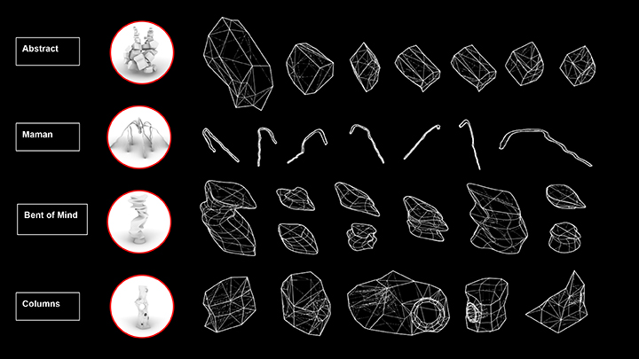
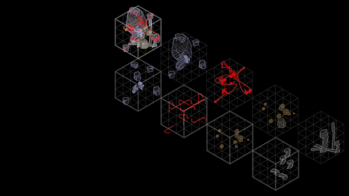
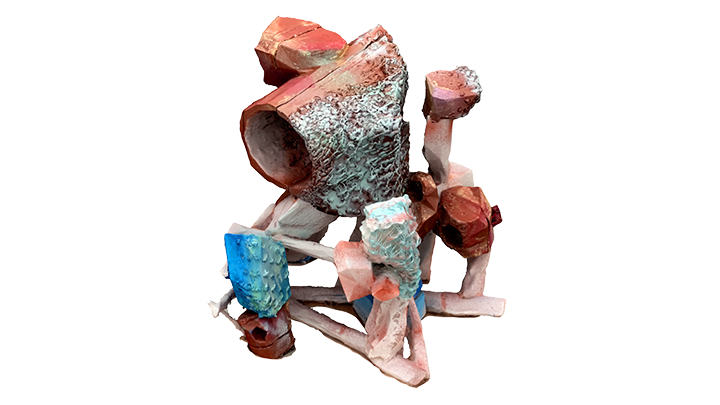
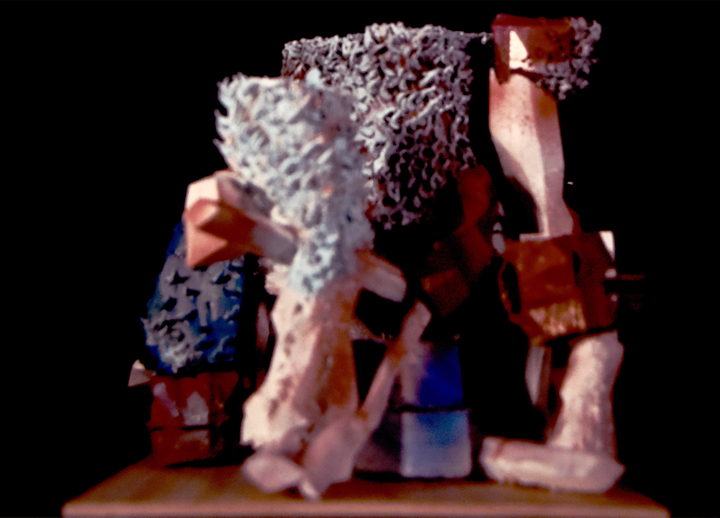
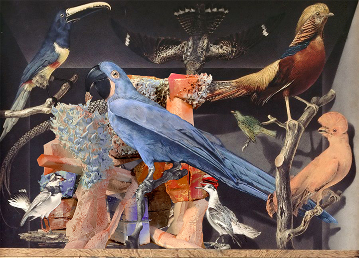

RESOLUTION
AUD IDEAS 2019-2020
Project by Akash Ragde, Chunsu Ouyang, Tong Wang, & Zhishan Liu.
Software: Agisoft, Zbrush, Unity, Maya
Protogrammetry and 3D printing contributing to Architecture Design
Chunsu Ouyang
Architecture design has two phases of collecting data and designing models including blueprint (digital) models, and physical models (Stojakovic, 2008). The second phase is the most time-consume part because architects have to often switch their design between the digital model and physical model for optimizing out an ideal final model. During the data collection process, photogrammetry which turns photos into data is useful. It saves time compared to the traditional way of measuring objects. In the designing process, yet photogrammetry is useless. Research about this technique takes it as a recording tool rather than a design tool because this technology can only save much time in transferring existed buildings into data and digital models but not in designing creative models. To be specific, this technique is only applied to record historical buildings by now because research about it already existed mainly focuses on recovering accurate buildings with details, especially in vulnerable and usually unapproachable historical buildings (Stojakovic, 2008). However, 3D printing which relies on digital models and automatically fabric 3D models by a 3D printer shortens the time cost in the modeling process. Compared to the traditional ways of only using photogrammetry in the first phase, 3D printing makes this technique practical in the second phase. So, the combination of photogrammetry and 3D printing may accelerate the whole architecture design. Moreover, when all the data of photogrammetry and 3D printed model is shared online, Geographic Information System (GIS) and Augmented Reality (AR) will contribute to multiple-designer projects at the same time, which can be a revolution in terms of accelerating large scale architecture design projects.
According to traditional research, photogrammetry saves money and time during the data collection process, which relies on images and algorithms. Compared to the data from the time-consume drawing of field surveys which is accurate, the data from detailed photos, which is produced by affordable cameras with specific algorithms, is also reliable and fast (Shashi M., Jain K., 2007). From this perspective, this technique does not require expensive cameras but demands the photos in detail which are almost free and little time cost. As for the usage of the data, Werner et al (2002) attempt to illustrate a way of reconstructing buildings automatically by photogrammetry. Based on each photo and a set of sparse scene features from cameras, they achieve a digital model. Shashi et al. also successfully achieve a digital model with details and textures by photogrammetry and with good accuracy. Those studies support the idea that during the data collecting process, photogrammetry shortens the time consuming, saves money and contributes to digitalize existed buildings. However, those studies do not explore its usage as a design tool and leave a blank of improving the design process. This blank results in a low efficiency of the switching process between the digital and physical models and a tendency of ignoring physical models. d'ANNIBALE E.. (2011) proves the possibility to quickly obtain a 3D photorealistic digital model by photogrammetry. Kobayashi (2006) assesses that 3D digital city modeling is accessible by using photogrammetry from aerial images. They find the potential of this technique in big scale digital design without physical models. Yet it is malfunction because of the limitation of database and network condition. Drap P. et al. (2008) conclude that a great amount of data is required if co-design in city design is set up. Guo Y. et al. (2008) suggest that for reducing the complexity in the AR system, accurate and reliable tracking and registration are necessary. Reulke R. & Scheele M.(1997) mention that the resolution of cameras used in photogrammetry is not the only aspect influencing the quality of data. Koutsoudis A. et al. (2007) claim that photogrammetry from physical models saves the more budget than only relying on software when digitally reconstructing the old city of Xanthi. They prove that the digital database without physical models cannot afford a scale design up to the city-level. Perhaps the researchers do not perceive the importance of the switching process and therefore are not satisfied with the network condition and tools because they have to consume more databases and time to realize the real-time display in AR and GIS.
A new way may fill in the blank, which combines with the technique of 3D printing. It fabricates physical models based on digital models from photogrammetric models. Once we made a simple craft model, we would not need a manual model anymore and be able to switch our design between the two modes quickly and economically.
Despite the significance of the studies reviewed above, there are a number of additional issues that need to be resolved. The cost balance of 3D printing is worth counting because even a slight improvement of accuracy is costly on devices. Moreover, the degree of physical model's accuracy required by photogrammetry is highly related to the price of a 3D printer. For the co-design in the future, research about synthesizing different data resources referring to the relationship between digital models and physical models is required.
Reference:
Reulke, Ralf & Scheele, M.. (1997). CCD-Line Digital Imager for Photogrammetry in Architecture. Intern. Archives of Photogrammetry and Remote Sensing. Volume 32, 195ff.
Werner T., Schaffalitzky F., & Zisserman A. (2002). Automated Architecture Reconstruction from Close-range Photogrammetry. Int. Arch. Photogramm. Remote Sens. Spat. Inf. Sci. Journal. Volume 34.
Drap P., Grussenmeyer P., Curtinot P.Y., Seinturier J., & Gaillard G. (2004). Presentation of The Web Based Arpenteur Tools: Towards a Photogrammetry Based Heritage Information System. XXth Congress of the International Society for Photogrammetry and Remote Sensing (ISPRS). 123-128.
Kobayashi Y. (2006). Photogrammetry and 3D city modelling. WIT Transactions on The Built Environment. Volume 90, 209-218.
Koutsoudis A., Arnaoutoglou F., & Chamzas C. (2007). On 3D reconstruction of the Old City of Xanthi. A Minimum Budget Approach to Virtual Touring Based on Photogrammetry. Journal of Cultural Heritage. Volume 8, 26-31.
Shashi M., Jain K. (2007). Use of Photogrammetry in 3D Modeling and Visualization of Buildings. ARPN Journal. Volume 2, No.2, 37-40.
Guo Y., Du Q., Zhang W., & Xu L. (2008). Application of Augmented Reality GIS in Architecture. The International Archives of the Photogrammetry, Remote Sensing and Spacial Information Sciences. Volume XXXVII, 331-336.
Stojaković Vesna. (2008). Terrestrial Photogrammetry and Application to Modeling Architectural Objects. Architecture and Civil Engineering. Volume 6, 113-125.
d'ANNIBALE E.. (2011). Image Based Modeling from Spherical Photogrammetry and Structure for Motion. Geoinformatics CTU FCE 2011. 62-73.
Carnevali L., Ippoliti E., Lanfranchi F., Menconero S., Russo M., & Russo V. (2018). Close-Range Mini-UAVs Photogrammetry for Architecture Survey. The International Archives of the Photogrammetry, Remote Sensing and Spacial Information Sciences. Volume XLII-2, 217-224.






